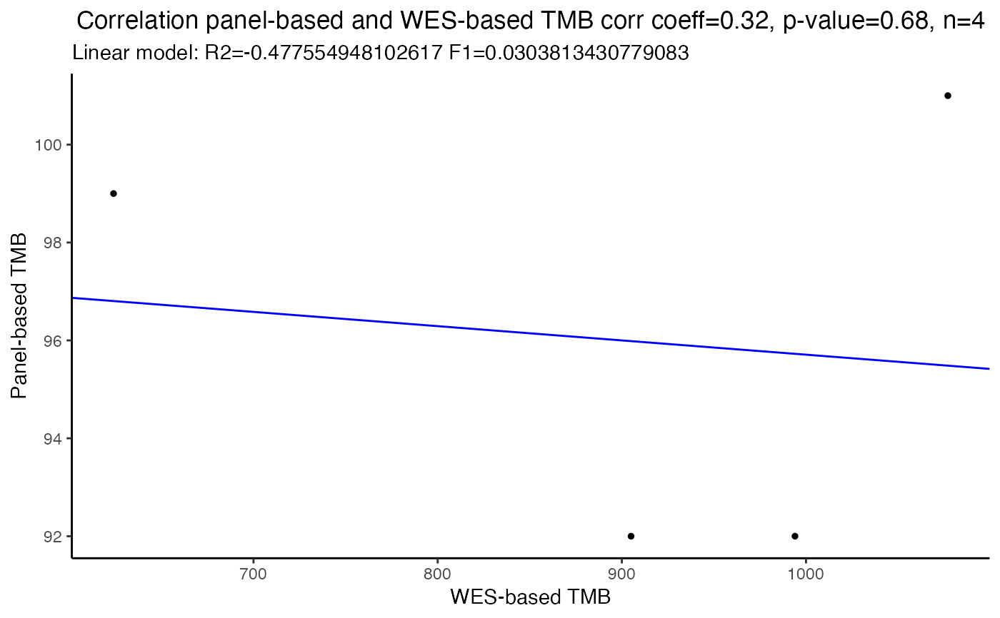

correlateTMBvalues.RdThis function takes in input TMB values quantified for the same samples from
gene panels and from whole exome sequencing datasets and performs correlation
analysis. Panel-based TMB values may come from real gene panel sequencing or
from a simulated gene panel, generated using the simulatePanel
function.
correlateTMBvalues(panel.TMB, WES.TMB, corr.coeff, title.plot)
| panel.TMB | a |
|---|---|
| WES.TMB | a |
| corr.coeff | type of correlation coefficient: "pearson", "kendall" or "spearman" |
| title.plot | a |
Returns a pdf file with correlation plot, the Spearman's correlation coefficient with 95 number of samples.
Laura Fancello
# Read vcf files containing somatic mutations identified by WES ------------- data(ExampleWESvcfs) # Read files with WES and gene panel design --------------------------------- data(ExampleWESdesign) data(ExamplePaneldesign) # Filter for gene panel simulation ------------------------------------------ # Remove known cancer mutations vcfs_NoCancer_ForPanel <- applyFilters(vcfs = ExampleWESvcfs, assembly = "hg19", design = ExamplePaneldesign, remove.cancer = TRUE, tsList = NULL, variantType = NULL)#> Warning: data object COSMIC_hg19 was not found. Loading a COSMIC demo dataset. Please do not use this for TMB analysis but only for demoing TMBleR#> Warning: data object COSMIC_hg19 was not found. Loading a COSMIC demo dataset. Please do not use this for TMB analysis but only for demoing TMBleR#> Warning: data object COSMIC_hg19 was not found. Loading a COSMIC demo dataset. Please do not use this for TMB analysis but only for demoing TMBleR#> Warning: data object COSMIC_hg19 was not found. Loading a COSMIC demo dataset. Please do not use this for TMB analysis but only for demoing TMBleR# Filter for original WES --------------------------------------------------- # Filter out synonymous mutations vcfs_NoSynonymous_WES <- applyFilters(vcfs = ExampleWESvcfs, assembly = "hg19", design = ExampleWESdesign, remove.cancer = FALSE, tsList = NULL, variantType = c("synonymous")) # Subset the WES dataset so that it will only contain variants in the regions # targeted by the panel you want to simulate SimulatedPanel_NoCancer <- applySimulatePanel(WES = vcfs_NoCancer_ForPanel, WES.design = ExampleWESdesign, panel.design = ExamplePaneldesign, assembly = "hg19") # TMB quantification -------------------------------------------------------- # Perform TMB quantification on the simulated panel TMBs_SimulatedPanel <- applyTMB(inputForTMB = SimulatedPanel_NoCancer, assembly = "hg19") # Perform TMB quantification on the original Whole Exome sequencing TMBs_WES <- applyTMB(inputForTMB = vcfs_NoSynonymous_WES, assembly = "hg19") # Correlate WES-based and simulated panel-based TMB values ------------------ cor_plot <- correlateTMBvalues(panel.TMB = TMBs_SimulatedPanel$Tot_Number_Mutations, WES.TMB = TMBs_WES$Tot_Number_Mutations, corr.coeff = "spearman", title.plot="Correlation panel-based and WES-based TMB")#> Warning: Cannot compute exact p-value with ties